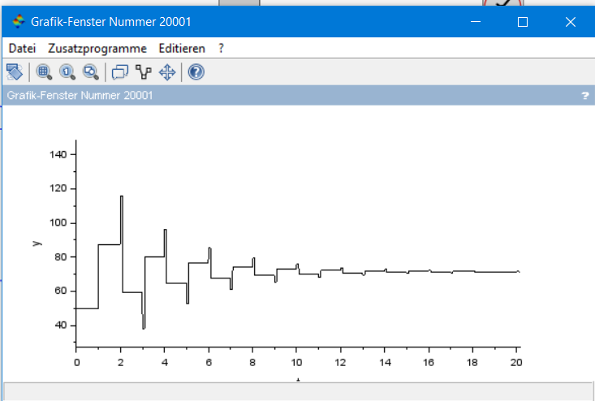

3.2 Regelkreise
Beispiel Konstantlicht-Regelung
regelt die Raumbeleuchtung oder Teile davon bei Belegung automatisch so, dass eine eingestellte Mindestbeleuchtungsstärke nicht unterschritten wird
- Im Gegensatz zur Tageslichtschaltung, soll es aber auch nicht unnötig hell sein, wenn es draußen schon hell ist

Konstantlichtregelung
- Lichtstärke kann (quasi) stetig gesteuert werden (z.B. über Dimmer oder Pulsweitenmodulation)

✍️ Aufgabe 3_2_1: Konstantlicht-Regelung
- Laden Sie die Datei Konstantlicht_nur_p.zcos und passen Sie den P-Parameter in
PID-Baustein an und beobachten Sie die Reaktion des Systems - Welche Komponenten werden durch welche Bausteine dargestellt?

✔️ Lösung

- Bleibende Regelabweichung. Die 100 Lux werden nie erreicht
- Schwingen des Systems
- Sprunghaftes Verhalten (wegen Delay)
Proportional-Regler
- Reaktion der Stellgröße bzw. Steuerungsgröße \(u(t)=K_P \cdot e(t)\)
- multipliziert die Regelabweichung \(e_t\) mit dem Verstärkungsfaktor \(K_P\) und gibt das Ergebnis aus
- je dunkler \(y_m\) im Verhältnis zur Führungsgröße (\(w\)), desto heller die Beleuchtung (\(u\))
- Reaktion der Stellgröße:
- \(u(t)=K_P \cdot e(t)\)
def p-regler(e, k_p):
ausgang = e * k_p
return ausgang

✍️ Aufgabe 3_2_2: Regelung der CO2-Konzentration
- Ziel ist der Entwurf eines Reglers zur Steuerung einer Belüftungsanlage auf Basis der Schadstoffkonzentration im Raum in ppm
- Zeichnen Sie den Verlauf der Stellgrößen (Drehzahl der Anlage) für folgende zwei Regler:
- stetiger Proportionalregler: \(u(t) = \frac{2}{min \cdot ppm} e(t)\)
- Regelung nach Logik nächste Seite.
✔️ Lösung

✔️ Lösung
def regler (e, letzte_drehzahl):
if e ==1000:
drehzahl = letzte_drehzahl
else:
if e > 1000:
drehzahl = e
else:
drehzahl = 0
return drehzahl
Zusammenfassung P-Regler

- P-Glied, welches als Regler eingesetzt wird
- Zeitverhalten: reagiert unverzögert
- bleibende Regelabweichung bei Systemen mit Ausgleich (Regelstrecken die bei konstantem Eingang einen konstanten Wert anstreben)
✍️ Aufgabe 3_2_3: Wassertank mit PID-Regler
- Entfernen Sie den I und D-Anteil des PID-Reglers in demo_watertank.zcos und beobachten Sie die Reaktion des Systems

ü߆ Integral-Regler

- Antwort \(u(t)\) auf Sprung unmittelbar, jedoch nicht sofort mit voller Stärke
- Je länger (\(t\)) die Regelabweichung besteht und umso größer sie ist, desto stärker die Antwort
- \(u(t)=\frac{1}{T_n}\int_0^te(\tau)d\tau\)
- \(u(t)=\frac{1}{T_n}\int_0^te(\tau)d\tau\)
- \(u(t)=K_I \cdot \int_0^te(\tau)d\tau\)
- \(T_n\) ... Nachstellzeit bestimmt den Gradienten des Anstieges von \(u\)
- summiert die Regelabweichung über die Zeit auf
- Regelabweichungen werden auch bei Strecken mit Ausgleich vollständig eliminiert, dafür langsamer

Proportional-Integral-Regler

- Sprungantwort: \(u(t)=K_Pe(t) + K_I \cdot \int_0^te(\tau)d\tau\)
- PI-Regler Kombination aus P- und I-Regler
- schnelle Reaktion (wie P-Regler)
- exakte Ausregelung ohne eine bleibende Regelabweichung (wie I-Regler)
ü߆ Proportional-Differenzial-Regler

- Sprungantwort: \(u(t)=K_Pe(t)+K_d \frac{de(t)}{dt}=K_Pe(t)+T_v \frac{de(t)}{dt}\)
- kombiniert P-Regler mit Differenzial-Anteil
- der D-Anteil bewertet die Änderung einer Regelabweichung (differenziert) und berechnet so deren Änderungsgeschwindigkeit
- reagiert schon auf "Ankündigungen" von Veränderungen
- sehr schnell, doch bleibende Regelabweichung
- Unruhe im Regelkreis wird verstärkt, wenn Sensorsignal verrauscht

✍️ Aufgabe 3_2_4: Reaktion D-Regler
✍️ Wie sieht die Reaktion aus?